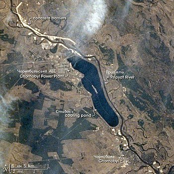
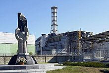
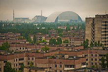

Чорно́бильська атомна електростанція імені В. І. Леніна, скорочено ЧАЕС — зупинена атомна електростанція біля міста Прип'яті в Київській області, що діяла з 1977 по 2000 роки. Будівництво станції було розпочато 1970 року, перший блок запущено 1977 року. АЕС розташована на відстані 2 км від міста Прип'яті, збудованого паралельно зі станцією передусім для її працівників. Назва пов'язана з містом Чорнобилем, тодішнім районним центром цієї місцевості. Станом на початок 1986 року ЧАЕС була найпотужнішою атомною електростанцією європейської частини СРСР. 26 квітня 1986 року при проведенні проектних випробувань стався вибух, що повністю зруйнував четвертий реактор станції і спричинив значне забруднення навколишньої території радіоактивними речовинами. Внаслідок цієї аварії було повністю евакуйовано населення Прип'яті, Чорнобиля та всіх інших населених пунктів у радіусі 30 км навколо станції, а сама аварія є однією з найбільших техногенних катастроф в історії людства. Чорнобильська АЕС розташована на відстані 2 км від міста Прип'яті, за 18 км на північний захід від міста Чорнобиля, 16 км на південь від кордону з Білоруссю і близько 110 км на північ від Києва.
 Енергоблок № 1, зупинений у 1996 у зв'язку з постановою уряду України; Енергоблок № 2, зупинений в жовтні 1991 в зв'язку з пожежею в машинному залі, яка була викликана несправністю в роботі турбогенератора № 4. Внаслідок пожежі згоріло 180 тон мастила, 2,5 тисячі м² даху машинної зали внаслідок пожежі обвалились[1]; Енергоблок № 3, перебував в експлуатації до 2000; Енергоблок № 4, 1986 сталася аварія масштабу екологічної катастрофи з повним зруйнуванням активної зони, виконані першочергові заходи для зменшення наслідків аварії, продовжуються роботи з забезпечення контролю його стану, ядерної та радіаційної безпеки; Енергоблоки № 5 та № 6 з незавершеним будівництвом, припиненим після аварії 1986 року; Сховище рідких та твердих радіоактивних відходів і відпрацьованого ядерного палива; Завод з переробки рідких радіоактивних відходів (отримано дозвіл на експлуатацію); Промисловий комплекс з поводження з твердими радіоактивними відходами (на етапі «гарячих» випробувань); Інша допоміжна інфраструктура АЕС.
 Відповідно до Постанови Ради Міністрів СРСР від 29 червня 1966, який затверджував план введення атомних станцій в 1966—1977, було заплановано задіяти енергетичні потужності в розмірі 11 900 МВт, зокрема з реакторами РБМК — 8 000 МВт. Одна з атомних електростанцій мала компенсувати дефіцит електроенергії в Центральному енергетичному районі — найбільшому в Об'єднаній енергосистемі (ОЕС) Півдня. Введення в експлуатацію першого енергоблока першої атомної електростанції в Україні планувалося 1974, другого — 1975.
 9 вересня 1982 після виконаного середнього планового ремонту під час пробного запуску реактора 1-го енергоблоку на потужності 700 МВт теплових при номінальних параметрах теплоносія зруйнувалася тепловиділяюча збірка і відбувся аварійний розрив технологічного каналу № 62-44. Внаслідок розриву була деформована графітова кладка активної зони, в реакторний простір було викинуто значну кількість радіоактивних речовин зі зруйнованої тепловиділяючої збірки. Важкі наслідки аварії були зумовлені відмовою системи аварійного захисту і тривалим (протягом 20 хвилин) утриманням реакторної установки після розриву каналу на потужності 700 МВт.[12]. Наслідком розриву каналу був викид радіоактивної парогазової суміші з реакторного простору блоку № 1 в аварійний конденсатор, трубопровід зв'язку газових контурів блоків і далі під дзвін мокрого газгольдера. У цій частині газового контуру відбулося короткочасне підвищення тиску, що призвело до викиду до 800 кг води з гідрозатворів у реакторний простір блоку № 2, який працював на номінальній потужності. За рахунок випаровування викинутої води значно підвищився тиск в реакторному просторі блоку № 2, що у свою чергу призвело до витіснення інших гідрозатворів з боку реакторного простору. Парогазова суміш з реакторного простору блоку № 2 викидалася під дзвін мокрого газгольдера і далі через його спорожнений гідрозатвор разом з радіоактивною парогазовою сумішшю з реакторного простору блоку № 1 — у вентиляційну трубу і атмосферу. У результаті викиду радіоактивних речовин була забруднена значна територія. Для ліквідації наслідків цієї аварії було потрібно близько 3 місяців ремонтних робіт. Канал 62-44 та ділянку активної зони, що безпосередньо примикала до зруйнованого каналу, назавжди було виведено з роботи.[12]